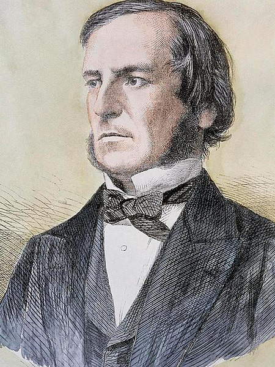

A vida de George Boole
George Boole foi um matemático e filósofo britânico nascido em Lincoln em 2 de novembro de 1815. Ele veio de uma família humilde de vendedores de sapatos em Ballintemple, Irlanda. Embora fosse esperado que crianças de sua classe social aprendessem apenas o mínimo necessário, Boole decidiu estudar latim por acreditar que isso o levaria a uma posição melhor na vida.

Inicialmente, Boole recebeu orientação básica de gramática de um dono de livraria. Ele continuou a estudar por conta própria e, aos 14 anos, traduziu um poema grego para o latim.
Seu pai levou essa tradução para um jornal local, onde foi publicada com elogios e críticas. Um professor de línguas clássicas duvidou da autoria de Boole e o desafiou a melhorar
seus conhecimentos em latim, incentivando-o a estudar também o grego.
Boole recebeu suas primeiras lições de matemática de seu pai e, após concluir a escola pública, fez um curso comercial para se preparar para o futuro.
Aos 16 anos, começou a dar aulas para ajudar nas despesas da casa, mas ganhava pouco. Durante quatro anos, ele lecionou em escolas primárias. Nesse período, Boole começou a considerar profissões que
proporcionassem uma boa perspectiva de vida, e a advocacia estava fora de seu alcance financeiro. Restou-lhe a opção de se tornar padre, mas embora não tenha seguido essa carreira,
os quatro anos que dedicou à preparação para o sacerdócio não foram em vão, pois aprendeu francês, alemão e italiano, habilidades que seriam úteis em seu futuro.
Aos 20 anos, Boole abriu uma escola onde planejava ensinar matemática nos mesmos moldes das boas escolas. Buscou alguns livros que o orientassem. Ele buscava orientação em livros da época e estudou os grandes mestres da matemática. Seu primeiro trabalho foi ignorado pela maioria dos matemáticos, mas alguns reconheceram seu potencial.
O desenvolvimento natural do que Boole começou, transformou-se em uma das mais importantes divisões da matemática pura. Disse Bertrand Russel: "a matemática pura
foi descoberta por Boole em seu trabalho 'Leis do Pensamento'", publicado em 1854.
Por conta própria, aos 20 anos, Boole decidiu estudar a "Mécanique Céleste" de Pierre-Simon Laplace,
obra dificil, devido à falta de clareza do autor. Logo depois tentou acompanhar a abstrata mecânica analítica de Joseph Louis Lagrange
na qual não continha diagramas para auxiliar na compreensão.
Ainda assim pôde fazer sua primeira contribuição à matemática, um artigo chamado "calculo de variações".
Ainda em seu estudo solitário descobriu as "invariantes", cuja importância pode ser reconhecida
ao percebermos que a teoria matemática dos invariantes é essencial para Teoria da Relatividade de Albert Einstein.
Carreira Cientifica
No início de sua carreira científica, Boole observou algo que outros haviam negligenciado devido à sua percepção de simetria e beleza das relações algébricas. Boole enviou seu trabalho para o Jornal Matemático de Cambridge, que se encontrava sob habilidoso editor matemático escocês D.F. Gregory, onde foi reconhecido por seu estilo e originalidade. Foi nesta época que surgiu a moderna concepção de álgebra, que levou à compreensão da álgebra como álgebra, como o desenvolvimento abstrato das consequências de um grupo de postulados sem necessariamente a interpretação ou aplicação de números. Por decisão propria ele separou os símbolos das operações matemáticas das coisas sobre as quais elas operavam, buscando compreendê-las. Seu trabalho nessa direção é interessante, mas muitas vezes ofuscado por seu interesse principal: a lógica matemática.
Boole continuou a lecionar mesmo depois de iniciar sua carreira científica e se correspondia com outros matemáticos britânicos importantes. Em 1838, publicou o seu primeiro livro A Análise Matemática da Lógica, que tornaria ele famoso pela ousadia e perspicácia de sua visão.
Em 1849 foi designado professor de matemática no recém criado "Queen's College", na cidade de Cork, Irlanda(atualmente University College Cork). Realizou os mais variados trabalhos matemáticos, mas seu esforço principal continuou sendo o de aperfeiçoar e dar forma final à sua obra-prima, publicada em
1857, Uma Investigação das Leis do Pensamento, em que se fundamentam as teorias matemáticas da lógica e probabilidades. Em 1857 foi eleito membro da Royal Society, que é uma sociedade científica e a academia nacional de ciências do Reino Unido.
Desde o trabalho pioneiro de Boole, sua grande criação tem sido melhorada. Mas a lógica simbólica foi negligenciada por muitos anos depois de sua invenção. O trabalho de Alfred North Whitehead e Bertrand Arthur William Russel
foi o primeiro a convencer um grupo de matemáticos que a lógica simbólica devia receber sua séria atenção.
Boole não viveu por muito tempo após a publicação de sua obra-prima. Um ano depois, casou-se com Mary Everest, que acabou se tornando sua discípula. Depois da morte do marido, agora se chamando Mary Boole, aplicou algumas das ideias adquiridas com ele para a racionalização e humanização da educação infantil.
George Boole morreu de pneumonia em 8 de dezembro de 1864, aos 49 anos, na cidade de Cork. Seu legado continuou a ser reconhecido e sua criação, a lógica simbólica, recebeu a sua devida atenção após muitos anos de negligência.